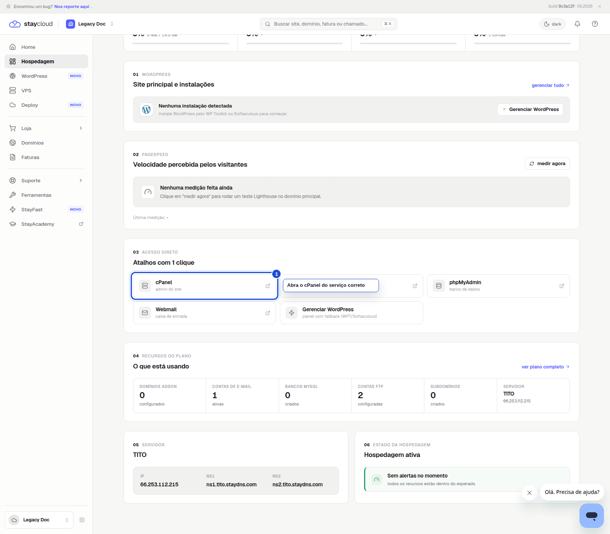
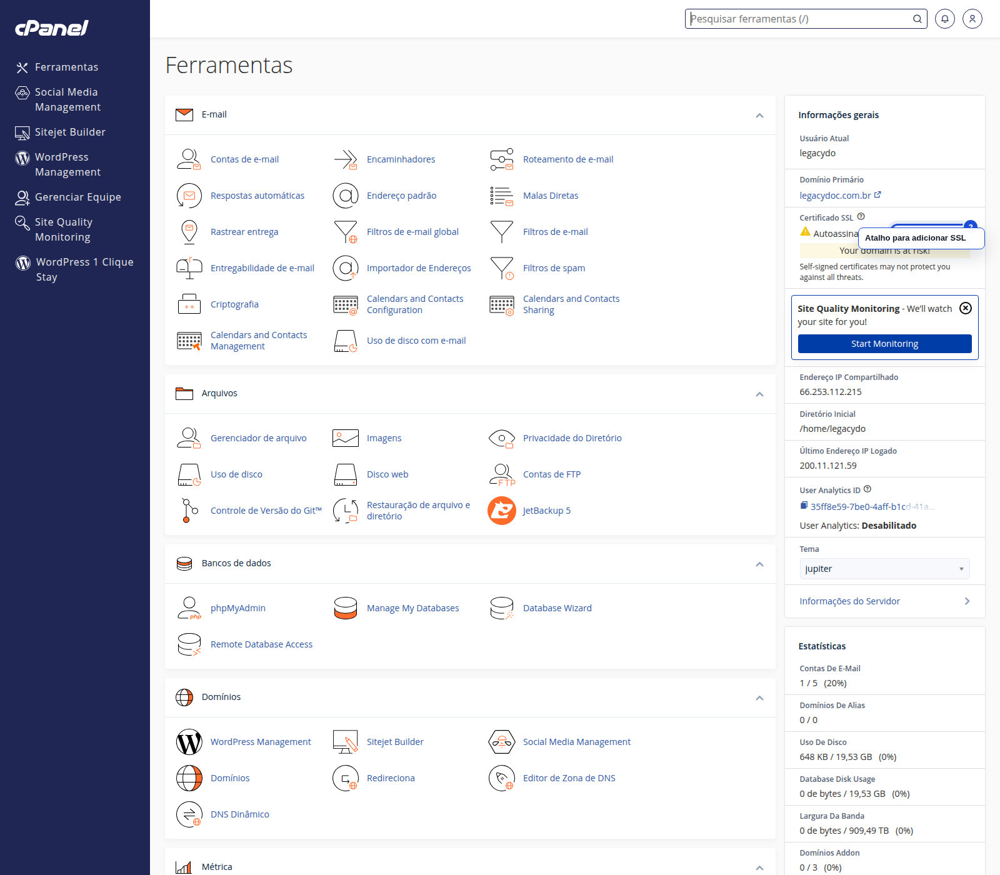
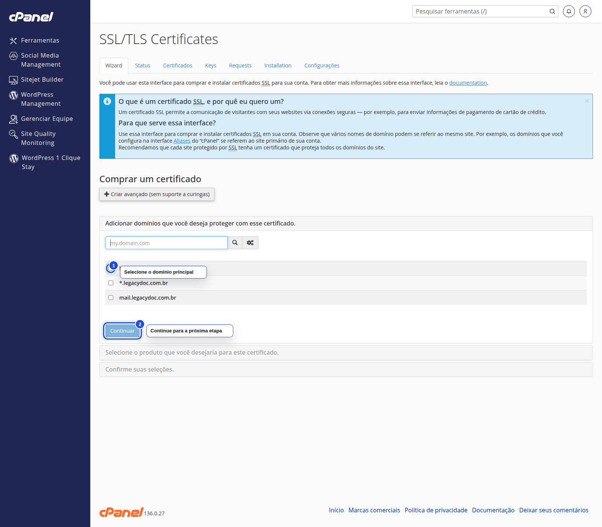

Abra o caminho certo pelo Painel Novo, chegue à interface do SSL no cPanel e identifique o ponto seguro para avançar com um certificado gratuito.
Use este tutorial quando quiser iniciar a emissão de um SSL gratuito para o domínio correto da sua hospedagem.
Entre no Painel Novo e selecione a hospedagem que contém o domínio que você deseja proteger.

No cPanel, abra a interface de SSL/TLS Certificates para iniciar o processo.

Na tela do SSL, marque o domínio principal e confira a próxima etapa antes de seguir.

Título SEO: Como gerar certificados SSL gratuitos no Painel Novo da StayCloud
Slug: como-gerar-certificados-ssl-gratuitos-no-painel-novo-da-staycloud
Meta description: Veja como iniciar a geração de certificados SSL gratuitos no Painel Novo da StayCloud, escolher o domínio correto e identificar o ponto seguro do processo.
Quando você começa pelo Painel Novo, confere o domínio certo e chega até a etapa segura do assistente, o fluxo de SSL fica claro para revisão.